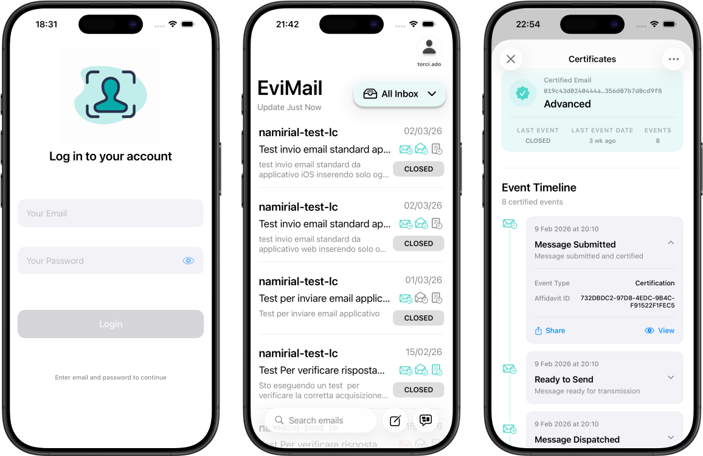

— Works

WatchOS Game
A fast-paced, 8-bit inspired card game designed exclusively for your wrist. Experience retro arcade graphics and quick gameplay directly on your Apple Watch.
WatchOS App
VIEW WORK ➔

Thesis Work
A full-Swift end-to-end ecosystem for certified communications. It features a Vapor-based server as a secure middleware and a native SwiftUI client to manage trust services, biometric security, and digital affidavits on the go.
iOS App
VIEW WORK ➔